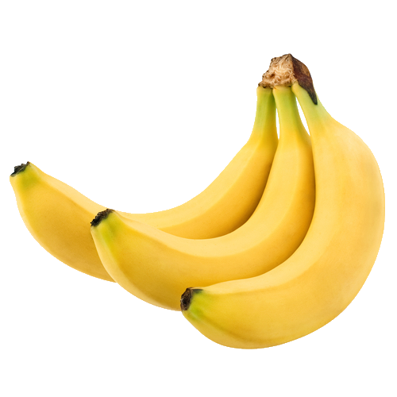

숙면에 좋은 음식

빆 Banana | Apple | Onion | Kiwi | Garlic 빆
불면증과 숙면에 도움이 되는 음식은
‘멜라토닌’
을 많이 함유한 천연 식품을 들 수 있다.
멜라토닌은 뇌의 송과선이라는 기관에서 분비되는 호르몬으로 수면주기를 포함한 생체리듬을 조절하는데,
멜라토닌의 분비량이 많아지면 깊은 잠에 빠져들게 되고,
적어지면 잠에서 깨어나게 되어 멜라토닌을 많이 함유하는 천연 식품 섭취는 숙면에 도움이 된다.